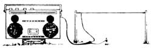

"To have beautiful and delicious greens early in the year, when nothing else is available (except maybe wild dandelions), try sowing spinach in the middle of autumn," writes Lance Mellon of Woodward, Pennsylvania. "The plants will grow to medium size before winter sets in ... and they'll burst forth in the early spring with loads of greens, while your other?spring-planted-veggies are just sprouting."
Gary Coffey has a tip for those of you who are attempting to plant (or transplant) evergreens and other shrubbery at this often dry time of the year. The Mount Juliet, Tennessee reader lines holes with potatoes before setting the plants in place. He claims the spuds provide moisture until the plant is adjusted and can better survive on its own.
Charlotte Pierce of Greensburg, Kentucky saves her child's Halloween mask each fall and uses it in the following spring's garden to scare away birds and other small pests.
A few squirts of light machine oil in your rabbits' ears every two months or so will keep mites away, writes bunny-raiser B. Alice Shipley of Jordan, Arkansas. (Alice also advises against doing this during the coldest winter months, because damp-eared rabbits are susceptible to colds.)
Barry Raygor, a serviceman in the U.S. Air Force who's stationed in Britain, sent this tip from across the "big pond". "Faded blue jeans are fashionable, but the denim seems to wear out faster as its dye is lost. To prevent this, soak your new dungarees in a tub of cold, clear water. Then mix in one cup of ordinary table salt per pair of jeans." Barry reports that this "recipe" has added years to the look, and wear, of his blue jeans.
Instead of sprinkling salt on your popcorn, try flavoring the snack by melting salt-free butter and peanut butter together, and pouring the mix over the popped kernels. Dave and Julie Plourde of Rochelle, Illinois do, and find it produces a good-tasting, healthful treat ... particularly for folks who must restrict their salt intake (and we all probably should), or those who need extra protein in their diet.
Paul Williams found himself stuck with a large doghouse when his canine companion decided to move indoors. So the Elsah, Illinois reader converted the vacant dog dwelling into a woodbox, which could be placed just outside his back door. He first loosened onehalf of the roof, hinged it at the "peak", and added a hasp to the bottom of the same side. Paul then nailed a piece of board over the doorway, painted it, and used old rubber tubing as weatherstripping to keep moisture out. The resulting woodbox is a handy addition to Paul's back porch, and holds a goodly amount of fuel.
"One of the best indicators of an animal's general state of health is the color of its gums," writes Barbara Burr of Fruitland, Idaho. "Fit creatures will have gums that are a bright, clear pink color, while pale pink generally indicates anemia ... which is usually caused by worms. Gums that are bluish in color suggest that the animal might have circulatory problems, and gums with a yellow tint may signal liver or kidney trouble."
When Lisa Murray makes homemade lasagna, she doesn't bother to precook the noodles. Instead, the Rembert, South Carolina reader layers her dish with the raw pasta and bakes as usual. When done, the noodles will be just as tender as precooked pasta would be ... but they won't be torn!
Why buy high-priced herbal seasoning salts when you can make them yourself? Sara McGinnis, of Anchorage, Alaska, simply blends 5 tablespoons of salt with 2 teaspoons each of the following ingredients: onion powder, garlic powder, celery seed, and parsley flakes. She then adds 1 teaspoon each of dried basil, marjoram, thyme, and oregano (she first rubs the dried herbs through a screen) ... and then mixes everything together before placing the seasoning in a shaker bottle with large holes. Sara says the homemade mixtures make great gifts for friends and family, too.
Lexington, Oklahoma reader Melvin Gates splits damaged or abandoned hollow-core doors down the middle, lengthwise, and then uses each half as a shelf for storage in his barn. Mel says the recycled doors produce shelves that are at least 15 inches wide and 6 feet long ... and cost far less per shelf than would I X 12's purchased from the lumberyard.
Barbara Angersbach avoids the problem of bad-smelling kitchen garbage by keeping an inch-deep layer of kitty litter in the bottom of her trash can. The North Shore, California resident says this is a particularly effective measure for counteracting the odors of cigarette butts and ashes.
Homemade cupcakes take on an added delight when they're baked in ice cream cones, according to Mary Siegert of Tucson, Arizona. She stands the cones upright on an ungreased cookie sheet, spacing them about two inches apart. Mary then fills each mold half-full with cake batter, and bakes them for 10 to 15 minutes (or until they're done). Once the confections have cooled, she either frosts the tops, or adds a scoop of ice cream to each one! The clever lady says they're great hits at children's parties, and that mothers like them, too ... probably because the treats don't dirty any dishes or leave paper wrappings to be cleaned up!
Al Smith offers this trick, which he swears will improve portable AM radio reception in areas where stations are hard to find. Al?who practices his technique in Rock Springs, Wyoming runs an antenna lead and a ground lead from the coaxial antenna cable of an abandoned car radio, places the portable unit beside (or on top of) the car radio, and then tunes both receivers to the same channel. The car radio (which isn't turned on) becomes, Al claims, sort of an external antenna for the portable.
"If you've been unsuccessful in trapping mice, try using cotton soaked in lard or bacon grease," writes Russell Skinner of Central Point, Oregon. "Such bait will have a double attraction for the rodents. They like lard as a food, and will be tempted to use the cotton for their nests. Furthermore, the soaked 'puffs' can be easily fastened to the bait pan of the trap."
Mrs. John Schwartz has a tip for MOTHER?readers who do applique work, hemming, or other sewing chores: An ordinary clear plastic bag can be used to bond two pieces of material together! Mrs. Schwartz-who resides in Bigfork, Montana-simply centers the plastic between the two pieces to be joined, then places a brown paper sack over the top and applies a hot iron. Any excess plastic will adhere to the sack and come off. Appliques and hems will stay firmly in place ... allowing you to easily overcast or blindstitch them.
Through the years we've all probably discovered a few practical, downhome, timetested solutions to the frustrating little problems of everyday life. Why not share your best "horse sense" with the rest of MOTHER's readers? Send your suggestions to Down-Home Country Lore, THE MOTHER EARTH NEWS', 105 Stoney Mountain Road, Hendersonville, North Carolina 28791. A one-year subscription-or a one-year extension of an existing subscription will then be sent to each contributor whose tip is printed in this column. MOTHER.
|
|
 |
|